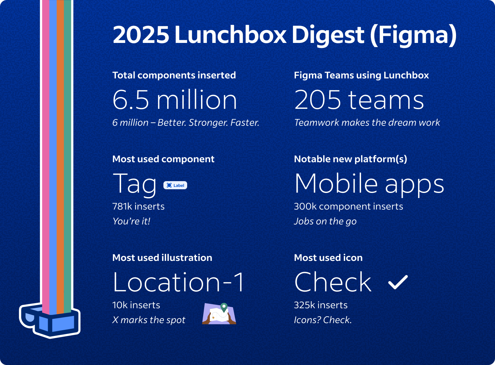
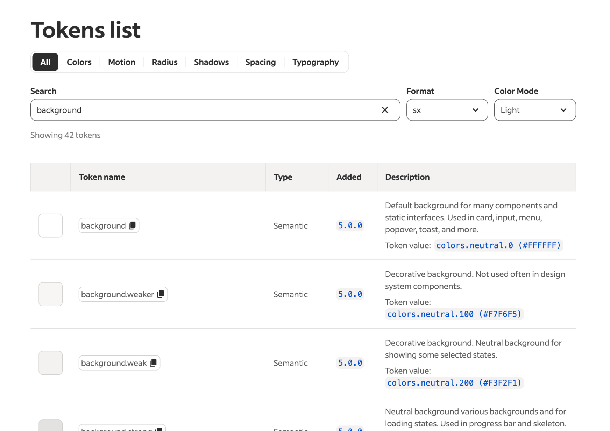
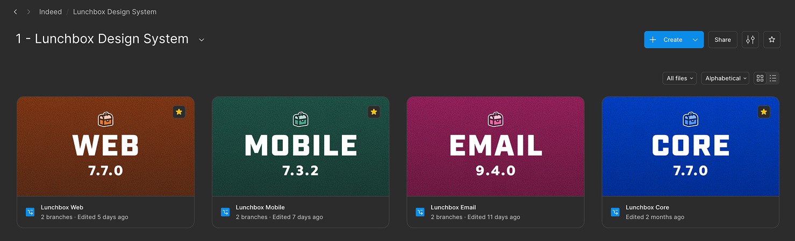
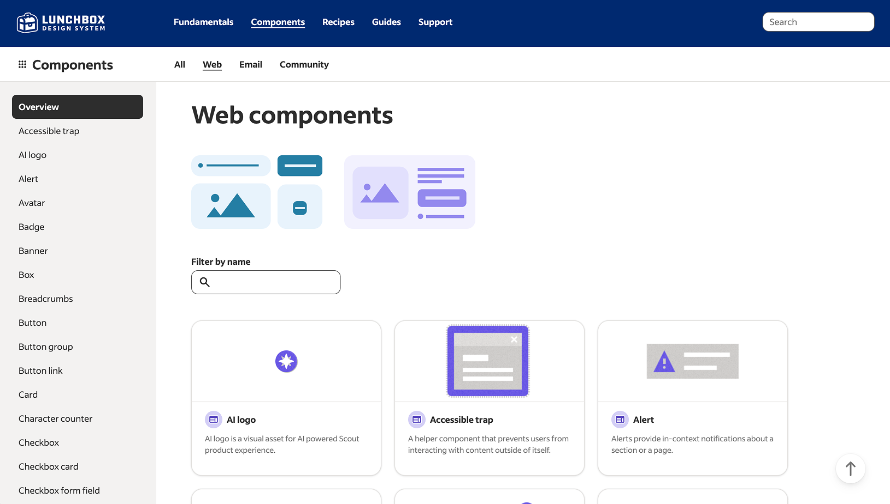
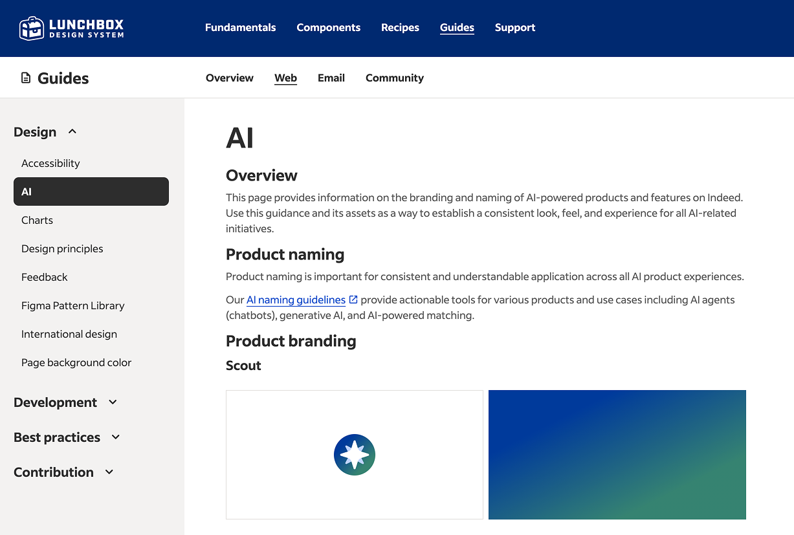
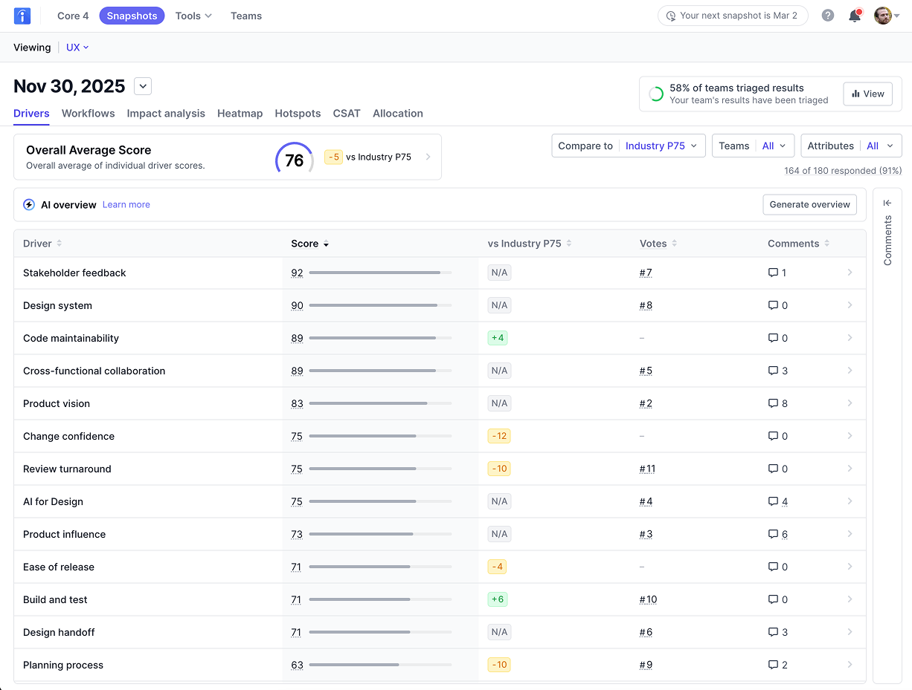

Keith Weston
User Experience Designer in Austin, TX
Lead Designer, Design System @ Indeed

Indeed
Roles held:
- Lead UX Designer, Design System (2023 – Present)
- Senior UX Designer, Design System (2021 – 2023)
As the lead UX designer for the Indeed Design System, Lunchbox, I helped shape and scale the design system that underpins one of the world's largest job marketplaces.
Overview and reach
The Indeed design system began in 2020. After version 7 released in 2025, the design system is now mandated for all product teams and has 95%+ adoption across the company. The Indeed design system underwent a rebrand to Lunchbox in 2025, and supports web (React), mobile apps (iOS, Android, React Native), and email.
By the numbers, as of 2026
- Company size: 11k+
- Indeed UX org size: 226
- Design system team members: 18
- Lunchbox Slack support channel members: 705
- Design system "guild" members: 32
- Full Figma seats: 455
- Web components: 66
- Mobile app components: 36
- Email components: 28
- Total Figma view seats: 3,674
- Major releases per year: 1-2
- Minor releases per year: 12
- Office hours per month: 4
- Average support requests per month: 40
Inspired by Spotify's Wrapped, I send out a yearly Lunchbox Digest (internally).

System principles & strategy
Design systems are people first, technology second. You can create the perfect design system, but if it does not match user expectations, it will not succeed. A few other principles:
- Performance is king. All decisions need to keep site/app speed in mind.
- Rigorous design and dev alignment. If it's in Figma, it's in code. On release days, designers and developers coordinate on releasing versions.
- A design system is the floor, not the ceiling. An experience can't be 100% made with the design system, and custom components are good for innovation.
Figma mastery
Figma is an important tool for our design system. In the 5 years I have been supporting Lunchbox in Figma, I have become an expert with the tool. A significant portion of our work is keeping up with Figma changes, and understanding how those changes will affect our Figma deliverables and processes. Some examples, we've had to make significant changes with component variants, variables, booleans, branches, and many more. I am also a Figma admin at Indeed, and I always attend the Config and Schema conferences.
Foundations
Our foundational decisions are served via design tokens. In Figma, we use a combination of mostly variables and some styles (gradients, etc.), and in code, tokens are designed to be consumed by any platform. We also have linters in code to ensure developers are using the tokens versus raw values.
Related project and impact: Semantic color tokens. When I first joined Indeed, only global color tokens existed. In 2023, I created and delivered semantic color tokens, enhancing consistency, improving accessibility, and enabling theming such as dark mode. It powered a new theme test, resulting in an estimated $18MM increase in annual revenue.
Related project and impact: Indeed Sans. Indeed was using a Google font, Noto Sans, for all text. A custom font, Indeed Sans, was created to replace it across the company. I coordinated the release with the typography tokens, resulting in an estimated $12MM increase in annual revenue.

Components
Lunchbox supports components for web (66), mobile (36), and email (28). To reduce confusion, we've delivered these components in different Figma files. This is cleaner for designers who may only work on a single platform.
Related project and impact: Mobile apps. In 2025, I led the partnership with the mobile platform team to take ownership of the mobile app design system. This shift enabled consistency across more platforms and allowed that team to ship more mobile features.

Lunchbox website
The website for the design system is the source of truth, and both designers and developers use it to understand all aspects on how they can use Lunchbox. It contains not only tokens and components, but larger recipes, design guides, dev docs, and more.

Education, adoption, and support
Building the design system is less than half of the work. To ensure education, adoption, and support, we:
- Have a weekly support rotation including office hours
- Provide both recorded instructional videos and live classes
- Meet with individual teams to understand their vision
- Monitor metrics to understand use and changes needed
The effort put into the education, adoption, and support led to the success and mandate of the design system at Indeed.
Collaboration with support teams
We collaborate with other support teams at Indeed such as a11y, content design, UX research, data science, UX ops, dev ops, mobile platform, and more. For some teams, we meet weekly, such as our Lunchbox a11y meeting. The feedback from these teams help shape the product Lunchbox offers.
AI
AI has exploded over the past two years. Not only have we supported our external-facing AI brand to Indeed customers, we have provided AI mechanisms for our designers and developers. We have created a Lunchbox MCP server, and provide education on how to build prototypes with Cursor.

Lunchbox sentiment
Indeed sends surveys to the tech organization to understand what aspects work well and what needs improvement, and the design system consistently ranks near the top.
